The red pill choice
“You take the red pill, you stay in Wonderland, and I show you how deep the rabbit hole goes.”
Neural trace program: Active> WHAT IS REAL?
A computer hacker learns from mysterious rebels about the true nature of his reality and his role in the war against its controllers.
Thomas Anderson lives two lives. By day he is an ordinary programmer. By night he is a hacker known as Neo.
When a coded warning urges him to follow the white rabbit, Neo is ripped out of his synthetic sleep cycle and into the desert of the real.
Discover the complete chronology →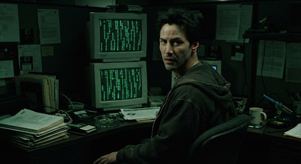
“You take the red pill, you stay in Wonderland, and I show you how deep the rabbit hole goes.”
Neural trace program: ActiveA neuro-interactive simulation built to mimic the apex of human civilization in 1999.
Cycle version: 6.0Buried near the planet's molten core, Zion is the final fortress of free humanity.
Location depth: −4,000 mThe architecture of an illusion and the awakening of the human mind.
“You have to see it for yourself.”— Morpheus
Cryptic transmissions breach Thomas Anderson's terminal: “Wake up, Neo. The Matrix has you.”
The red pill shatters the neural link and reveals humanity's machine-built prison.
Combat regimens upload at impossible speed inside the white-void Construct.
The Oracle forces Neo to confront whether he is truly the One.
Neo sees the code, halts bullets and rewrites the rules of the simulation.
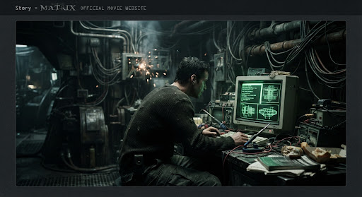
Dossier // Sector 01Earth lies barren beneath a blackened sky. Deep below the surface, Zion remains humanity's last refuge.
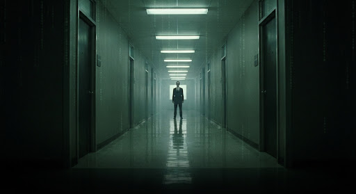
Dossier // Sector 02A shared computational dreamscape governed by rules that can be bent by those who see its syntax.
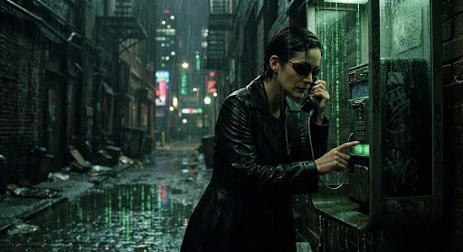
Dossier // Sector 03An insurgent fleet broadcasts pirate signals into the simulation to awaken humanity.
Meet the people who shape the story.
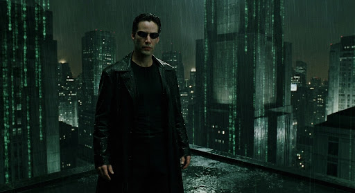
Designation: “The One” // Former software engineer & hacker
Neo's neural anomaly grants him unprecedented control over the physical laws inside the Matrix construct. He bends reality, halts ballistic trajectories and leads the human liberation.
Official trailers, high-definition stills, promotional artwork, and archive photography restored from 35mm camera negatives.
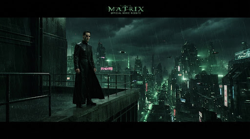
4K HDR // Dolby AtmosRestored 4K Ultra HD, Dolby Atmos sound and original 35mm scan. Experience the definitive teaser cut.
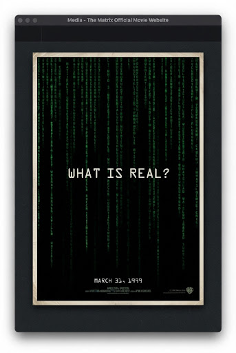
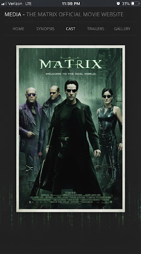
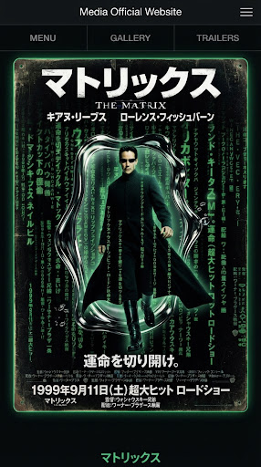
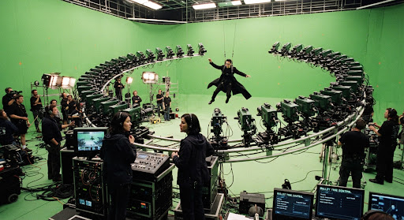
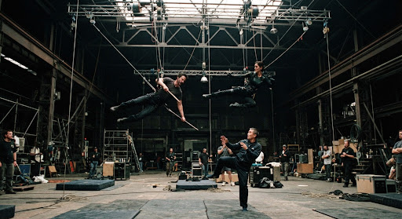
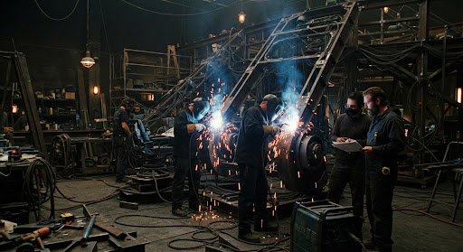
Verified ratings, worldwide critical consensus, and audience impressions.